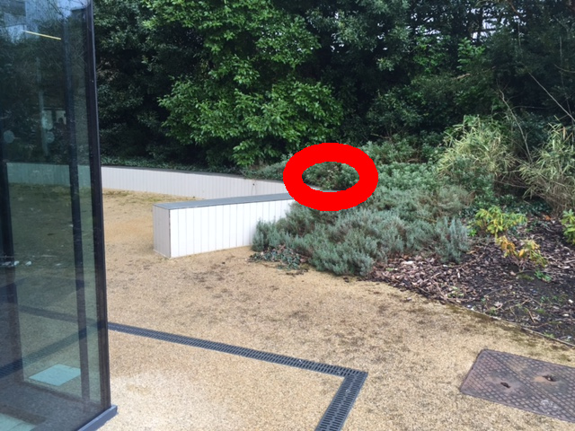
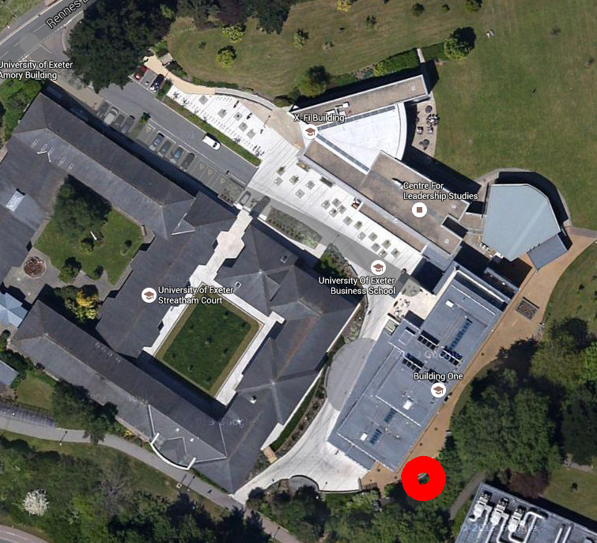

Generating Genius Autonomous Data Collection
We will now set up the Raspberry Pi sensor so that it can be used as
a standalone data logger.
Setting up wifi access
Do this by typing the following line into the terminal (whilst plugged
into the ethernet), and following the instructions:
- wget http://people.exeter.ac.uk/ph290/ftp/set_up_wifi.py
- sudo python set_up_wifi.py
- Reboot the Raspberry Pi from the menu in the top left corner
Setting the equipment off to collect data as soon as it powers up
Do this by typing the following line into the terminal, and following
the instructions:
- crontab -e
- type: 2
(this will open the file up so
that we can edit it)
- scroll down to the bottom of this page using the arrow keys, then type:
- @reboot sudo python /home/pi/generating_genius.py&
- press: Ctrl + O (i.e. the control key and the 'o' key)
- press: Press the enter key to agree that you want to use the original file name
- then press Ctrl + X (i.e. the control key and the 'x' key)
Now reboot the Raspberry Pi, and look at the web page to see if it is automatically collecting data. Note that there will be a short delay to ensure that the computer has fully started up.
Preparing the equipment for deployment
Place the equipment in the weatherproof containers as shown by the
teaching staff (and displayed below), ensuring
that the temperature sensor is sticking out of the hole (but still
under cover) and connected to the pins on the Raspberry Pi as before.
Plug the Raspberry Pi power cable in to the battery pack, then you are
ready to go (no other cables need be attached). Test the equipment is
working by switching the battery pack on (square button on top) - is it
collecting data - take a look on the web?
If everything is working, switch off the power, and we are ready to deploy.
Remember, you can you see the data appearing on the web here:
- Group1: https://thingspeak.com/channels/105075
- Group2: https://thingspeak.com/channels/105074
- Group3: https://thingspeak.com/channels/105078
- Group4: https://thingspeak.com/channels/105079
- Group5: https://thingspeak.com/channels/105080
- Group6: https://thingspeak.com/channels/105081
- Group7: https://thingspeak.com/channels/105083
- Group8: https://thingspeak.com/channels/105084
Deploying the equipment
You will deploy the equipment during the next academic session, so each group will have to take the equipment away with them. The following instructions tell you where to place the equipment. When you deploy this, be sure to press the power button on the battery, and check that the lights on the Raspberry Pi have come on!
The map below shows you the broad locations for deployment by each group. The numbers in the black circles relate to each of the group numbers. The photos below that show the specific deployment locations, highlighted by red circles.
PLEASE ALWAYS PLACE THE EQUIPMENT IN A DESCRETE PLACE AT THE IDENTIFIED SITE TO AVOID UNWANTED ATTENTION.

Group 1
Behind (uphill from) the Laver building, on the manhole cover.Group 2
On the little balcony between the Laver and Harison buildings.

Group 3
At the base of the tree off the path to the right a few steps down the path oposite the bottom of the Laver building.Group 4
NOTE: moved to the top of the slope, towards the road to improve WiFi signal. At the base of the tree in front of the pond down the hill from Laver, and close to the campus entrance.Group 5
Note: moved to the roof of Amory, underneath the pollen counter due to external reasons. Underneath the fold-up sign at the top of teh three steps at the entrance to the Xfi building.Group 6
Behind the short wall behind the cafe in Building:One. Note, the WiFi signal is weak, so place it close to the right-angle in the wall to ensure good signal strength.-

-
